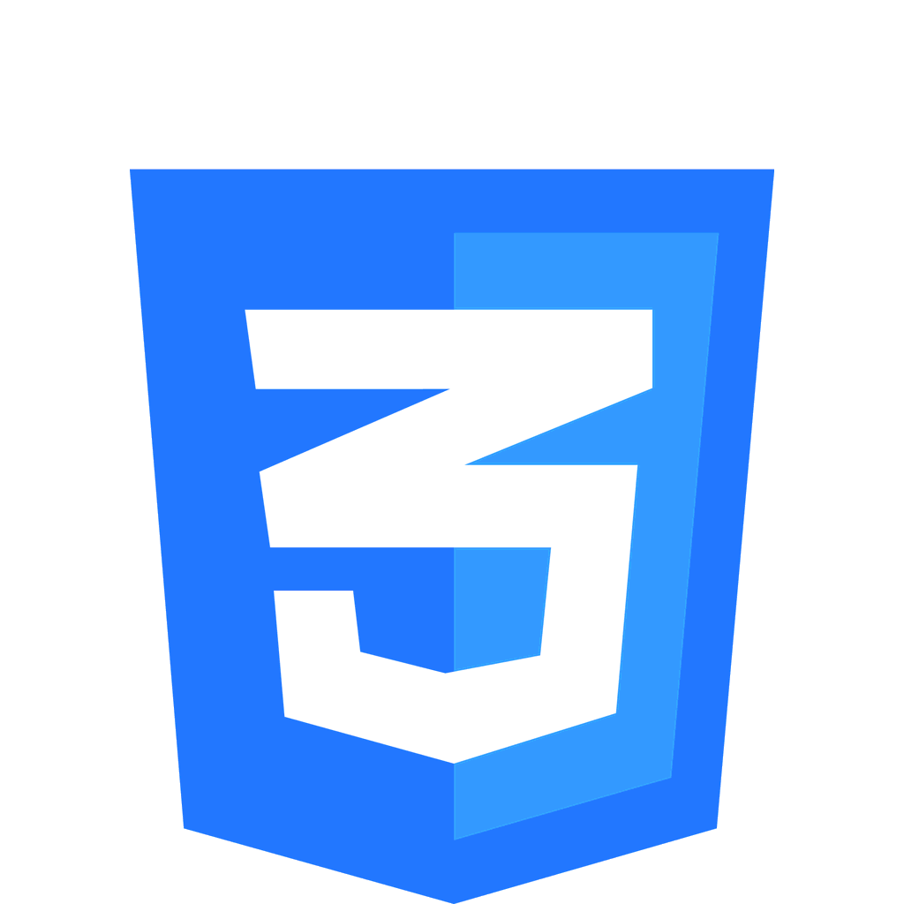
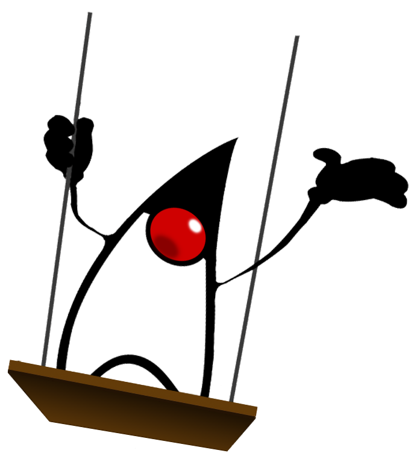
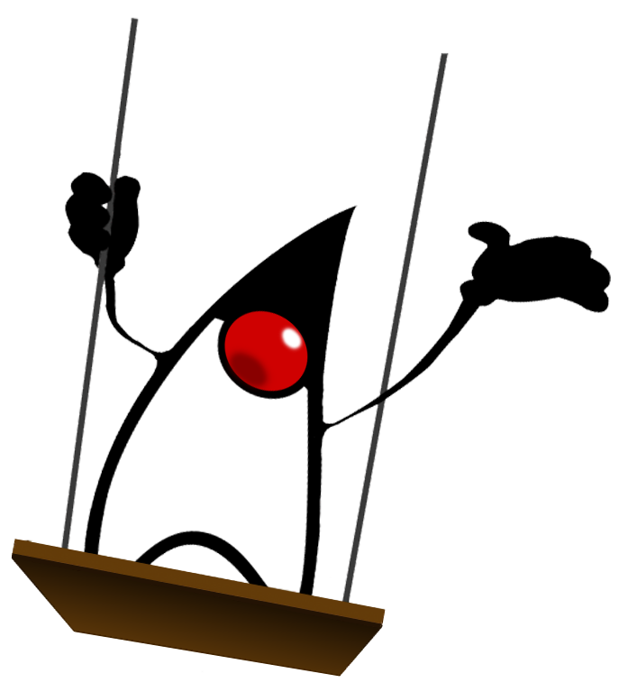
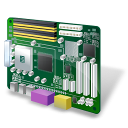
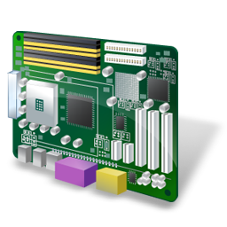

Nome: Samuel Finocchio
Risiedo a: Pescara
Cosa faccio:
Studio informatica a Pescara presso l'istituto di istruzione superiore IIS A.Volta
Sono tuttavia attivo in questo campo sin dalla scuola secondaria di primo grado e
la passione mi ha portato ad approfondire le mie conoscenze al di fuori del curriculare
Le mie competenze:
Sistemi informatici: reti e networking, teoria degli elaboratori, sicurezza informatica.
Hardware: progettazione, assemblaggio e riparazione di personal computer.
Software: manutenzione e installazione di software applicativi e sistemi operativi.
Ingegneria del software: progettazione e sviluppo di software per PC.
Programmazione web front-end: web design e sviluppo client-side.
Sviluppo di malware e creazione di tool antimalware specifici.
Consiglio vivamente la visione del mio sito web Informaticage ed il relativo canale YouTube
Cellulare: 346-1318270
E-Mail: samuelfinocchioit@gmail.com

 


 
